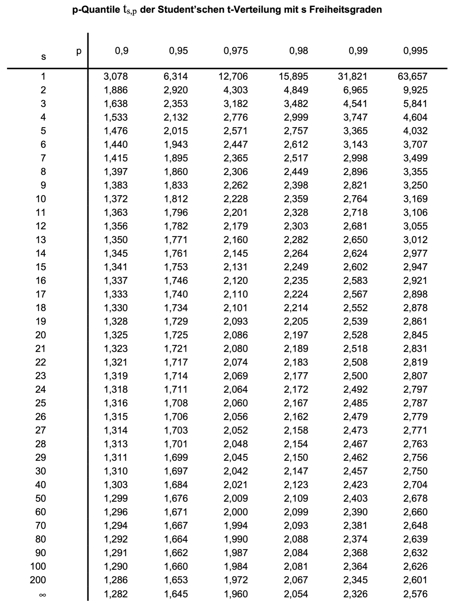

Dichtemessung einer Flüssigkeit#
Die Dichte eines flüssigen Mediums kann unter Ausnutzung des Archimedischen Prinzips ermittelt werden. Hiernach taucht ein Körper so weit in eine Flüssigkeit ein, bis die Gewichtskraft der verdrängten Flüssigkeit der Gewichtskraft des eingetauchten Körpers entspricht. Je kleiner also die Dichte der zu untersuchenden Flüssigkeit ist, desto tiefer wird ein schwimmender Prüfkörper in diese eintauchen.
Dichtemessung einer Flüssigkeit#
Für entsprechende Messungen verwendete Prüfkörper heißen Senkspindel oder Aräometer und bestehen vereinfacht aus einem zylindrischen Glaskörper, wie in der Abbildung skizziert.
Damit der Prüfkörper in der Flüssigkeit in aufrechter Lage stabil schwimmt, ist er in seinem unteren Teil mit einem meist aus Blei bestehenden Gewicht beschwert. Der zylindrische Glaskörper trägt eine Skala, an welcher die Eintauchtiefe des Prüfkörpers abgelesen werden kann.
Im vorliegenden Fall hat der Glaskörper die Masse \(m_\mathrm{Glas}\) und sei mit einem zusätzlichen Bleigewicht der Masse \(m_\mathrm{Blei}\) beschwert. Die Eintauchtiefe, gemessen von der Unterkante des zylindrischen Prüfkörpers bis zum Spiegel der Flüssigkeit, wird von der Skala angezeigt und sei mit \(h\) bezeichnet. Der zylindrische Prüfkörper weise über die gesamte Länge den Durchmesser \(d\) auf. Die Dichte \(\rho\) des zu untersuchenden Mediums ist dann näherungsweise durch folgenden Zusammenhang definiert:
Im Folgenden soll die Dichte \(\rho\) auf der Grundlage von Messergebnissen für die Größen \(m_\mathrm{Glas}\), \(m_\mathrm{Blei}\), \(d\) und \(h\) einschließlich der wahrscheinlichen Abweichungsgrenzen ermittelt werden.
Die Massen \(m_\mathrm{Glas}\) und \(m_\mathrm{Blei}\) werden in einer gemeinsamen Wägung mittels einer elektronischen Präzisionswaage ermittelt. Die von der Waage angezeigte gemeinsame Masse von Glaskörper und Bleigewicht beträgt \(M = (m_\mathrm{Glas}+m_\mathrm{Blei}) = 14\,\mathrm g\). Die relative Unsicherheit der Waage wird vom Hersteller mit \(0{,}5\%\) des Anzeigewertes bei einer Aussagewahrscheinlichkeit von \(P = 98\%\) angegeben.
Der Durchmesser \(d\) des Glaszylinders wurde in \(n_d = 25\) Wiederholungen mittels einer Bügelmessschraube gemessen. Das vollständige Messergebnis des Durchmessers beträgt \(d = 12\,\mathrm{mm} \pm 0{,}011\,\mathrm{mm}\) bei einer Aussagewahrscheinlichkeit von \(P = 90\%\).
Die Eintauchtiefe \(h\) wird in insgesamt \(n_h = 7\) Wiederholungen von der Skala abgelesen. Dabei werden die in der Tabelle zusammengefassten Einzelmesswerte ermittelt:
\(i\) |
0 |
1 |
2 |
3 |
4 |
5 |
7 |
|---|---|---|---|---|---|---|---|
\(h/\mathrm{mm}\) |
157,2 |
157,0 |
156,6 |
156,9 |
157,0 |
156,1 |
157,9 |
Bestimmen Sie die Eindringtiefe \(h\) inklusive absoluter Messabweichung für \(P=98\%\).
Bestimmen Sie die Dichte und die absolute Messabweichung.
Zwischenergebnisse
Zwischenergebnisse für 98% Aussagewahrscheinlichkeit:
Hinweis: Allgemein gilt für die Umrechnung zwischen zwei Aussagewahrscheinlichkeiten folgender Zusammenhang für die Unsicherheiten, wobei die Werte für \(t_{s;p}\) der Tabelle im Anhang zu entnehmen sind:
